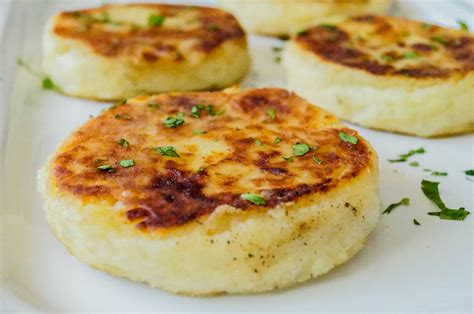

Potato Cakes
Easy and Quick!
This potato cake recipie is quick and easy and tastes just as good with fresh potatoes or leftovers from yesterday!
Ingredients
- 6 large potatoes (peeled and grated)
- 0.5 cups flour
- 1 tsp salt
- 1 tbsp butter
- Crisco
Steps
- Mix all ingredients, minus butter, in a bowl
- Grease a 12x18 cookie sheet
- Spread mixture on cookie sheet
- Bake one hour or until golden brown at 375 °F
- When golden brown, remove from oven and spread butter
- Cut into 4 inch squares